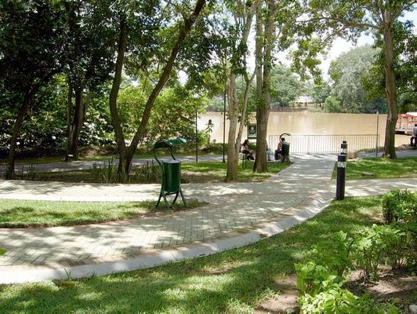
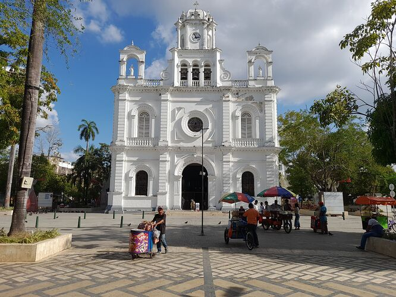
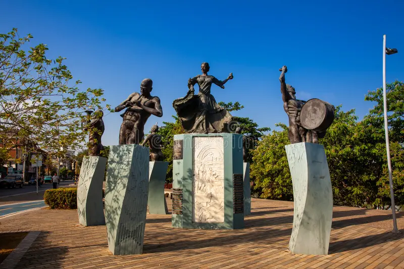
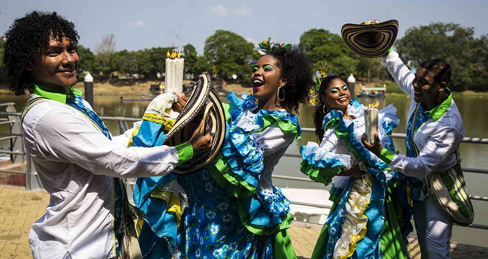
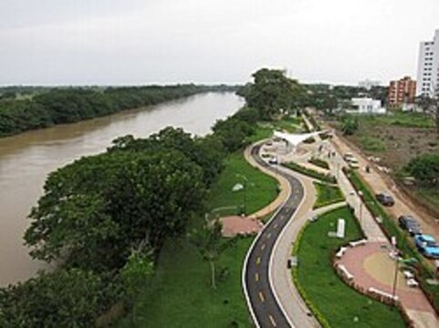
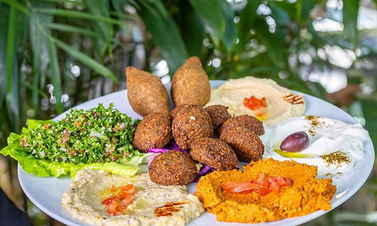

La cultura sinuana
Montería es reconocida por su riqueza cultural, tradiciones ganaderas, música vallenata y la calidez de su gente.
Donde el río, la cultura y la tradición crean experiencias inolvidables

Un espacio natural icónico para caminar y disfrutar del río Sinú.

El corazón de Montería, rodeado de historia y cultura local.

Un punto de encuentro para eventos artísticos y tradiciones monterianas.
Conoce más sobre cultura, gastronomía y naturaleza

Montería es reconocida por su riqueza cultural, tradiciones ganaderas, música vallenata y la calidez de su gente.

Uno de los lugares más visitados de la ciudad, ideal para caminar, disfrutar del río y conectar con la naturaleza.

Prueba delicias típicas como el queso costeño, bollo limpio, mote de queso y pescados frescos del río Sinú.